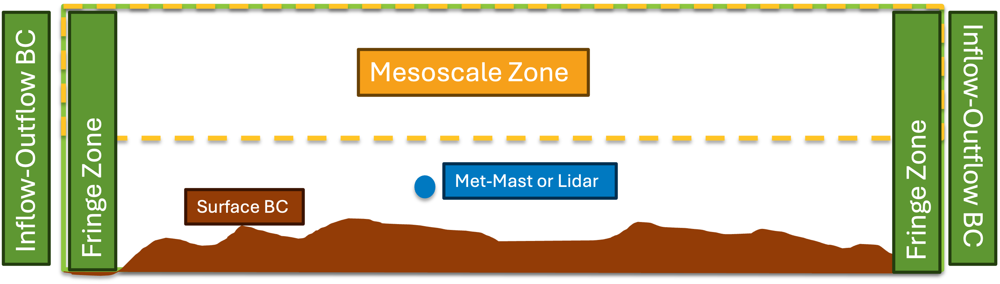

External Driven Terrain Simulations
The default method for running inflow-outflow simulation with the immersed forcing terrain method in AMR-Wind is to run a precursor simulation and use the time-dependent boundary plane from this simulation to provide the driving conditions. However, this method is not required for RANS simulations and can be avoided with LES. The schematic of the domain setup is shown below:
{kind=link}
There are several components in the domain setup:
Inflow-outflow BC: These boundary conditions are set to
pressure_outflow. No special handling is required.Fringe Zone: The specified profile for velocity, temperature and turbulent kinetic energy is smoothed through the fringe zone using a weighting function from CFD to specified value.
Mesoscale Zone: The velocity, temperature and turbulent kinetic energy is smoothed to the externally specified profile above the approximate height of the boundary layer.
Surface BC: Allows the ability to specify non-uniform roughness, temperature and heat flux at the terrain boundaries. The capability is experimental and will be available soon.
Met-Mast or Lidar: Allows the ability to digest velocity profiles from met-mast and Lidar. The capability is under development and documentation will be updated once available.
The first step in the setup is to enable the following flags in the input file:
ABL.initial_wind_profile = true
ABL.rans_1dprofile_file = "rans_1d.info"
The profile file specifies the external forcing file. The file contains z u v tke (in that order, column format).As the temperature profile is used with other parts of the code, it is not specified in this file but is added in the input file as follows:
ABL.temperature_heights = 0 8.03137 16.0627 24.0941...
ABL.temperature_values = 300.001 300.001 300.001 ...
This method was initially developed for wall-modeled RANS and has been extended to LES to support ABL profiles from climate models for non-canonical conditions. Once the profile is available, it can be enabled in the code using the following flags:
Temperature.source_terms = TemperatureFreeAtmosphereForcing
ICNS.source_terms = VelocityFreeAtmosphereForcing
The above flags enable the Mesoscale zone above the height of the boundary layer specified with the following flag:
ABL.meso_sponge_start = 2560
The fringe zone can be enabled in any of the four directions (+x, -x, +y and -y) independently. In the external driven approach, they should be enabled on all the four horizontal boundaries. This is done by adding the following flags:
ICNS.source_terms = DragForcing
ABL.horizontal_sponge_temp = true
Temperature.source_terms = DragTempForcing
DragForcing.sponge_west = 1
DragForcing.sponge_east = 1
DragForcing.sponge_north = 1
DragForcing.sponge_south = 1
The first three flags enables the addition of the forcing term to the momentum and energy equation and the last four terms enable the terms in fringe zone depicted above. If RANS modeling is used, the following extra flag is required:
ABL.horizontal_sponge_tke = true
The size of the fringe zones are set independently in each direction as follows:
DragForcing.sponge_distance_west = -2000
DragForcing.sponge_distance_east = 3000
DragForcing.sponge_distance_south = -2000
DragForcing.sponge_distance_north = 3000
The negative sign is important at the west and south as the distance is measured from inside to outside. If the sign is missed, the fringe zone size becomes zero.
Currently, the external profile is static and is read initially when starting simulations. It can be modified in the future to include time-varying profiles. When this approach is used with LES, no flow structures are generated as the inflow is an one-dimensional profile. A cell perturbation forcing method is introduced for generation of the flow structures and it is enabled as follows:
Temperature.source_terms = PerturbationForcing
The forcing is specified within a box with an amplitude and a Gaussian distribution with a zero mean and standard deviation equal to the specified amplitude is added to the energy equation. The inputs can be founded in inp.